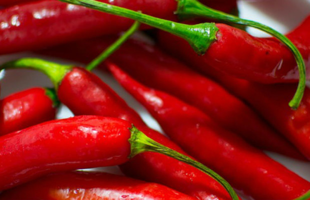

Bebidas Alcoholicas
Publicado el 07/03/2017
Las bebidas alcohólicas son aquellas bebidas que contienen etanol (alcohol etílico) en su composición. Atendiendo a la elaboración se pueden distinguir entre las beroducidas simplemente por fermentación alcohólica (vino, cerveza, sidra, hidromiel, sake) en las que el contenido en alcohol no suele superar los 15 grados, y las producidas por destilación, generalmente a partir de un producto de fermentación previo. Entre estas últimas se encuentran los diferentes tipos de aguardientes (como el brandy, el whisky, el tequila, el ron, el vodka, la cachaça, el pisco, la ginebra, etc.) y los licores, entre otras.
La cantidad de alcohol de un licor u otra bebida alcohólica se mide bien por el volumen de alcohol que contenga o bien por su grado de alcohol.
El alcohol es una droga legal en la mayor parte del mundo, con la excepción de los estados islámicos, y causa millones de muertes al año por alcoholismo.
Publicar
Claudia Carrillo Me gusta la calidad de la pagina
 Cesar Escolla Muchas cosas por aprender pero por lo general buena
Cesar Escolla Muchas cosas por aprender pero por lo general buena
Los Chiles Mexicanos
Publicado el 07/02/2017

Mesoamérica es el centro y el desarrollo del chile, por ello no es de extrañarse que México cuente con la mayor biodiversidad de este producto a nivel mundial. En 2013, el Sistema Nacional de Recursos Fitogenéticos para la Alimentación y la Agricultura (SINAREFI) lanzó la segunda edición del mapa Diversidad de chiles en México, el cual contempla 64 variedades distintas distribuidas a lo largo del país -aunque se estima que son más de 200 las variedades criollas-. Tan sólo en Oaxaca se encontraron más de 25 tipos distintos.
Durante el Tercer Foro Mundial de la Gastronomía Mexicana en la que los chiles, ajíes y especias han sido el centro de estudio, el investigador del SINAREFI, Porfirio Simón López López, hizo un breve recorrido por los principales chiles de México y su importancia en el país. Por su producción, los de mayor relevancia son el serrano, jalapeño, guajillo y ancho, seguidos por el pasilla, habanero, de árbol y manzano.
Publicar
Pedro Moreno Me encanta la comida con chile. Delicioso